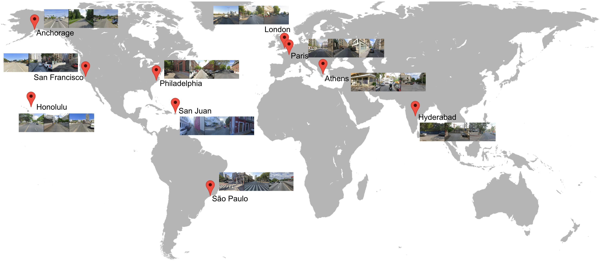
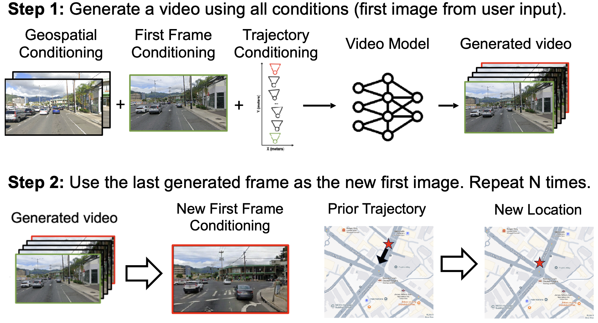

With explicit permission from Google, we collect Street View data from Google Maps across 10 diverse cities scattered across the globe: Paris, Athens, Anchorage, Hyderabad, Philadelphia, San Francisco, San Juan, Honolulu, London, and Sao Paolo. Across the 10 cities, we collected a total of 5.5M panoramas. Importantly, all sensitive information, such as license plates and faces, are blurred prior to collection.

We group all data based on their physical location and time of capture.
We create a training pair if we find a continuous path in a city where there exists 2 sets of captures located along the same path (within a distance threshold), but captured at different times (e.g, different dates, or even morning vs. afternoon of the same day).
This strategy forces CityRAG to disentangle the similarities (buildings, roads) and differences (weather, dynamics, lighting) between the pairs, such that it can reconstruct those similarities while maintaining a consistent transient appearance.
See video for details.
The video for geospatial conditioning (left column), trajectory defined by the target video (right column), and the first image of the target video are provided as conditions. The objective is to reconstruct the static structures (e.g., buildings, roads) from the geospatial condition, follow the trajectory, and respect the weather conditions and dynamic objects in the first image condition.
To the best of our understanding, there are no open-source baselines that perform our task of generating a 3D-consistent, navigable environment while simultaneously adhering to an external spatial cache. We run baselines from each of the categories: 1) I2V + pose control (Gen3C); 2) V2V + pose control (Gen3C, TrajCrafter); 3) V2V + style transfer (AnyV2V). CityRAG can be considered a superset of these categories, while also possessing a strong understanding of scene content (static vs. transient) and layouts.
CityRAG allows users to navigate arbitrary trajectories that do not exist in the database by stitching multiple retrieved geospatial videos. In this video example below, CityRAG retrieves and combines two perpendicular paths from the same intersection to construct a new trajectory that resembles turning right. Despite the discontinuity in the geospatial condition frames, the generator produces a consistent video, indicating its robustness and its understanding of the static and transient elements in a scene.
By stitching geospatial videos, users can specify arbitary paths. Then, CityRAG generates consistent sequences via autoregressive generation (AR). Note: CityRAG was not trained on AR. Consecutive generations simply take the last frame of the previous generation as the first image. Geospatial conditions ground each independent generation to ensure consistency (of the static structures).
